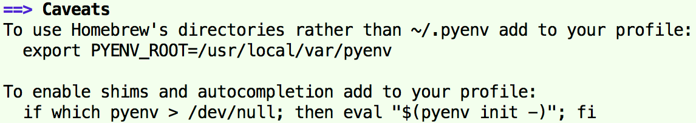
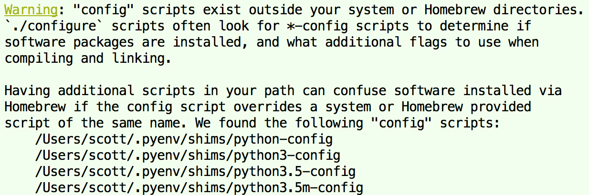
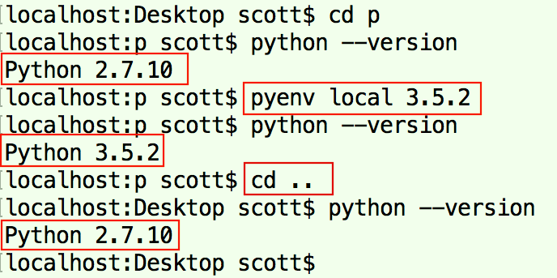

一、安装、卸载
- Python的安装方式有多种方式，可以通过Python安装包、Homebrew、pyenv等；
建议使用pyenv进行安装，pyenv可以很好地进行Python多版本管理，等同于NodeJS中的nvm；这里使用pyenv进行安装；
第1步：安装pyenv；
brew install pyenv
- （必须）向~/.bash_profile文件中添加
if which pyenv > /dev/null; then eval "$(pyenv init -)"; fi，保存后，执行source ~/.bash_profile应用配置；否则执行pyenv shell时报错：pyenv: no such command 'shell'； - （可选）使用pyenv安装的Python版本默认存放在/Users/USERNAME/.pyenv/versions/目录中，而不是Homebrew的相关目录中；向~/.bash_profile文件中添加
export PYENV_ROOT=/usr/local/var/pyenv，让其安装到Homebrew的/usr/local/var/pyenv/versions/目录中；
- （必须）向~/.bash_profile文件中添加
第2步：安装某个版本的Python；
pyenv install <VERSION>第3步：安装完成后，执行brew doctor进行检查；若出现以下警告：
Warning: "config" scripts exist outside your system or Homebrew directories...，则需要向~/.bash_profile文件中添加alias brew='"env" PATH=${PATH//$(pyenv root)\/shims:/} brew'即可解决；

通过pyenv安装Python，卸载也需要通过pyenv进行卸载；若手动直接安装Python则需要手动卸载（相关命令如下）；
sudo rm -rf /Applications/Python X.X sudo rm -rf /Library/Frameworks/Python.framework sudo rm /var/db/receipts/org.python.* ~/.base_profile中删除关于Python相关的PATH值Shell命令补充：删除无效文件链接（新建脚本文本，内容如下，添加执行权限）
# 遍历所有软链接 for a in `find /usr/local/bin -type l` do # stat –L：若链接无效返回1，有效返回0 stat -L $a >/dev/null 2>/dev/null if [ $? -gt 0 ] # -gt大于，-eq等于 then echo $a rm $a fi done
二、pyenv
某些系统工具依赖于Python，切换Python的版本可能导致这些工具无法使用；为了解决此问题，pyenv提供了切换Python版本的三种级别（shell > local > global）；
- shell：对当前shell的临时设定Python版本，退出后失效；
- local：对当前目录及子目录（子目录没有.python_version的情况下）设定Python版本，会在当前目录下创建.python_version；
- global：直接对系统全局默认的Python进行修改，不建议使用；
pyenv version # 查看当前pyenv版本（以python --version为准） pyenv versions # 查看已安装的Python版本（system为系统默认安装的） pyenv install -l # 查看可以安装的Python版本 pyenv install <VERSION> # 安装某个版本的Python pyenv rehash # 刷新shims（install之后使用） pyenv uninstall <VERSION> # 卸载某个版本的Python pyenv global [VERSION] # 查看或设置全局的Python版本 pyenv local [VERSION] # 查看或设置目录的Python版本 pyenv shell [VERSION] # 查看或设置Shell的Python版本 pyenv <local | shell> --unset # 取消某个级别设置的Python版本
pyenv和virtualenv的比较：
- pyenv是系统级别的多版本管理；对于使用同一版本Python的所有项目，都是使用相同的Python环境，模块被安装在系统目录下，共用同一套模块；
- virtualenv是项目级别的多版本管理；不同项目中的Python是独立的（即使使用相同的Python版本），一个项目中的模块只能在该项目中使用，模块被安装在当前项目目录中；
三、pip模块
pip是Python的模块管理工具（其也是一个模块），类似于Node.js的npm；
pip list # 查看已安装的模块 pip list <--outdated | -o> # 查看需要更新的模块 pip freeze # 只列出由pip安装的模块 pip freeze > <FILE_NAME> # 将由pip安装的模块，写入到模块依赖描述文件中 # 例如pip freez > requirements.txt pip install <PACKAGE> # 安装模块 pip install -r requirements.txt # 根据模块依赖描述文件安装模块 pip install <PACKAGE> --user # 安装模块到用户目录中 pip uninstall <PACKAGE> # 卸载模块 pip install <--upgrade | -U> <PACKAGE> # 更新模块，例如pip install -U pip pip show <PACKAGE> # 查看已安装的某个模块信息macOS系统默认安装的Python2.X没有安装pip，需要自己安装（相关步骤如下）；
wget https://bootstrap.pypa.io/get-pip.py # 下载pip安装脚本 sudo python get-pip.py # 执行脚本进行安装
四、pyenv、virtualenv配合
- virtualenv也是一个模块，需要通过pip进行安装；所以在某个版本Python上安装了virtualenv，只能在该版本Python环境下执行virtualenv命令；
但是可以在执行virtualenv命令时加-p参数，指定创建虚拟环境时所使用的Python版本；不加-p参数则使用当前virtualenv的Python版本；
# 使用指定Python的版本，创建Python虚拟环境vvv virtualenv -p /Users/scott/.pyenv/versions/3.5.2/bin/pip3 vvv source vvv/bin/activate # 激活虚拟环境 deactivate # 关闭虚拟环境创建Python虚拟环境，除了使用给每个版本的Python都安装的virtualenv模块外，还可以使用pyenv-virualenv插件；
pyenv-virualenv插件是pyenv插件化的“virtualenv”；它是pyenv的插件，不属于某个版本的Python，为所有版本的Python提供创建虚拟环境的功能；
brew install pyenv-virtualenv向~/.bash_profile文件中添加
if which pyenv-virtualenv-init > /dev/null; then eval "$(pyenv virtualenv-init -)"; fi，保存后，执行source ~/.bash_profile应用配置；使用pyenv-virtualenv创建的Python虚拟环境与直接使用virtualenv创建的效果一样，只是虚拟环境的文件目录被设置在~/.pyenv/versions/目录下，而virtualenv设置在当前目录下；
pyenv virtualenv <VERSION> <ENV_NAME> # 创建一个虚拟环境 pyenv virtualenvs # 查看已创建的虚拟环境 pyenv versions # 查看Python版本 # 在pyenv看来，虚拟环境是一个“特殊”的Python版本 pyenv activate <ENV_NAME> # 激活虚拟环境，也可使用"pyenv shell <ENV_NAME>"命令 pyenv deatcive # 关闭虚拟环境，也可使用"pyenv shell <OTHER_VERSION>"命令 pyenv uninstall <ENV_NAME> # 卸载（删除）虚拟环境
五、pipenv模块
pipenv模块可以认为是更简便的virtualenv，但是其比virtualenv更强大；其整合了virtualenv、pip、pipfile，可以更方便地为项目建立虚拟环境并管理虚拟环境中的第三方模块；
同时pipenv可以配合pyenv安装需要的Python版本；Besides, if pyenv is available, pipenv will automatically use it to install the required version.
Pipfile是模块依赖管理文件，用于替代过于简陋的requirements.txt；Pipfile文件是TOML格式，并且使用Pipfile.lock提供版本锁定支持；
// 安装 pip install pipenv// 使用当前系统的Python3版本创建虚拟环境 pipenv --three // 使用指定Python版本创建虚拟环境 pipenv --python VERSION // 激活虚拟环境 pipenv shell // 退出虚拟环境 exit// 安装flask模块并加入到Pipfile pipenv install flask // 安装固定版本flask模块并加入到Pipfile pipenv install flak==1.0 // 卸载flask模块并从Pipfile中清理 pipenv uninstall flask // 更新flask模块 pipenv update flask // 查看目前安装的模块及其依赖 pipenv graph // 查看目录信息 pipenv --where // 查看虚拟环境信息 pipenv --venv // 查看Python解释器信息 pipenv --pymacOS执行
pipenv install报错ValueError: unknown locale: UTF-8；解决方法：在~/.bash_profile中添加以下内容：export LC_ALL=en_US.UTF-8 export LANG=en_US.UTF-8
六、参考
- 1. pyenv的安装和使用：
http://v2in.com/pyenv-installation-and-usage.html - 2. 搭建基本的 Python 开发环境：
http://www.dreamxu.com/build-a-basic-python-development-environment/